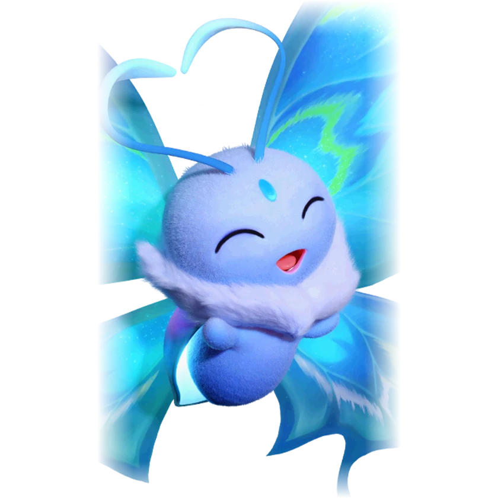

รายชื่อ Aniimo › #028

ผีเสื้อปีกกระพือ (Flutternym)
#028ธาตุลมLuminHealTier B
ขี้ขลาด ซ่อนตัวทุกครั้งที่รู้สึกถึงอันตราย แต่เกล็ดเรืองแสงที่สลัดออกมามักทำให้ถูกเจอ
ดูรายละเอียดเต็ม ร่างพิเศษ และร่างเปล่งประกายค่าสถานะพื้นฐาน
| HP | 94 |
|---|---|
| ATK | 81 |
| P.DEF | 68 |
| M.DEF | 68 |
| REGEN | 85 |
| BREAK | 41 |
สกิล
| โจมตีปกติ | ATK ลม ใช้พลังลมโจมตีเป้าหมายจากระยะไกล |
| สกิล 1 | Wind of Rejuvenation ลม สร้างพื้นที่ลมอุ่นใต้เท้า ฮีลทั้งทีมต่อเนื่องรวม 9% ของ HP สูงสุดของผู้ร่ายภายใน 8 วินาที Aniimo ธาตุลมได้รับฮีลเพิ่มอีก 3% |
| สกิล 2 | Purifying Dance พืช ล้างดีบัฟทั้งหมดของเพื่อนรอบตัว เมื่อล้างแล้ว อัตราฟื้น EP ของพวกเขาเพิ่ม 20% เป็นเวลา 10 วินาที |
สายวิวัฒนาการ
- ผีเสื้อปีกกระพือ → ผีเสื้อปีกสง่า (Aniimo เลเวล 21)
จุดเกิด
- Nimbus Fields Lv. 5–15
- Sea of Flowers Lv. 19–28
- The Mistwoods Lv. 35–37
- Blitzwood Lv. 40–45
Held Item ที่แนะนำ
- Spirited Feather Aniimo ที่สวมใส่ได้ REGEN เพิ่ม 0.7 ต่อเลเวล
- Miraculous Fleece ส่งต่อ 10% ของการฮีลที่เกินของเป้าหมาย ไปให้ Aniimo ที่มี HP เหลือเป็นเปอร์เซ็นต์น้อยที่สุด
งานใน Homeland
งานธาตุลม Lv.1, สันทนาการ Lv.1